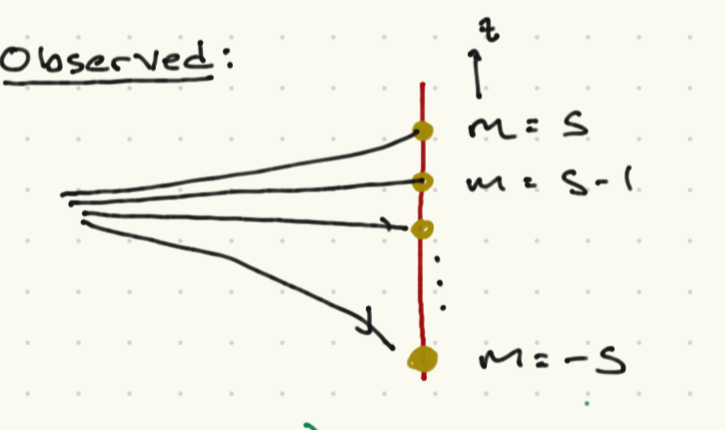

Example: spin-1/2 particles#
The goal of these notes is to consider the rules of quantum mechanics for the simplest possible case, \(V = \CC^2\). This is a physics course so we should give a physical realization of this simplest case! One such realization is the angular momentum states of “spin-\(\half\) particles. We will give a broad-brush and not precisely motivated description of such systems. A fuller description will have to wait until we discuss the theory of angular momentum.
Classical picture of magnetic moments#
Although I keep saying “we should just take quantum mechanics at face value” it is sometimes good to know how they relate to classical analogs; here in particular we will introduce some concepts that are best explained by relating the quantum and classical cases.

To warm up, let us consider a particle with charge \(q\) and mass \(%m\) moving in a circular orbit with radius \(R\) and constant tangential speed \(v\). Classically, we can say:
The period of the motion is \(T = \frac{2\pi R}{v}\).
If we consider times scales longer than this period, the current through the wire is \(I = \frac{q}{T}\).
We can define a magnetic moment as \(\vec{\mu} = I {\vec A}\). We can rewrite this as:
where \(p = m v\) is the linear momentum. Now, the magnitude of the angular momentum of the particle (with respect to the center of the loop) is \(j = |{\vec J}| = p R = m v R\). The angular momentum is a vector \({\vec J}\); it points in the same direction as \({\vec A}\). We can thus write
If we place this system in a magnetic field \({\vec B}\), there is a potential energy
The Stern-Gerlach experiment#
Quantum-mechanically, the story is somewhat different. Pictured above is a sketch of a device that should measure the magnetic moment (and thus the angular momentum) of a particle. The device emits particles with some fixed velocity along the \(y\) axis, and randomly oriented magnetic moments. We pass the particles through a magnetic field:
We assume \(B_0 \gg b_{x,z}\). It turns out that for the most part we can ignore \(b_x(x)\) for this experiment (I will not go into this here); I mention it because we do need to ensure that \({\vec\nabla}\cdot{\vec B} = 0\). In general charged particles will bend in this field due to the Lorentz force, and the magnetic moment will precess about the magnetic field. We will assume that the former effect can be ignored or taken into account; classically, the latter will not change \(\mu_z\) if we ignore \(b_x\).
The interaction of the magnetic moment with the magnetic field, however, will also induce a force in the \(z\) direction, dependent on \(\mu_z\):
This means that the trajectory will bend in the \({\hat z}\) direction, according to \(\mu_z\). Thus, if we place a detector screen at a fixed place along the
Now, the classical expectation is that in general, if the particles are emitted at random from a thermal source, \({\vec \mu}\) can have any orientation. Thus, \(\mu_z \in [-|\mu\,|\mu|]\), with \(|\mu|\) intrinsic to the particle somehow.

What is actually observed is very different. As illustrated in the figure above, the particles reach a discrete set of \(z\) values, consistent with the allowed values of the magnemic moment being
Here \(g\) is a dimensionless number that depends on the particle and is called the gyromagnetic ratio; while \(m \in [-s, -s + 1, - s + 2,\ldots, s]\), and \(s\) is an integer or half-integer. If we set \(q = e\) where \(e\) is the electron charge, we find \(g = 2\) for the electron, \(g = 5.59\) for the proton, and \(g = - 3.83\) for the neutron. The discrete values of \(\mu_z\) are perhaps more surprising. Note that in the case of the electron, proton, and neutron, \(s = 1/2\), so \(m = \pm \half\).
In the language we have developed, the point is that the particles have an intrinsic “spin” angular momentum which is associated with a set of operators \({\vec S}\), The components \(S_i = \frac{\hbar}{2} \sigma_i\), where \(\sigma_i\) are the Pauli matrices.
The Stern-Gerlach experiment corresponds to a measurement of \(S_z\), for which the allowed eigenvalues are \(\pm \frac{\hbar}{2}\).
Note that I could have oriented the Stern-Gerlach device along any axis \({\hat n}\). Then the device splits the particles according to their magnetic moment along the \({\hat n}\) axis. Following the logic above, this corresponds to a measurement of the operator \(S_{{\hat n}} = {\vec S}\cdot{\hat n}\). You can (and should) show with the information I’ve given you that this also has two possible outcomes, \(\pm \frac{\hbar}{2}\), the eigenvalues of \(S_{{\hat n}}\).
Now we can start playing some interesting games. For example, take a beam of \(N\) particles and pass them through a Stern-Garlach device aligned along \({\hat n}\), We can then apply a filter, based on their spatial location, that only passes through particles with \(S_{{\hat n}} = \frac{\hbar}{2}\).
If we measure \(S_{{\hat n}\) again on the filtered particles, we will fid that with \(100\%\) probability, the result will be \(S_{{\hat n}} = \frac{\hbar}{2}\). Note that at this point we are assuming that the spin degree of freedom does not evolve over the course of the experiment.
If instead we measure the spin of the filtered particles along the \(z\)-axis, where \({\hat n}\cdot{\hat z} = \cos\theta\) we find that the particles have spin \(S_z = \frac{\hbar}{2}\) with probability \(\cos^2 \frac{\theta}{2}\), and spin \(S_z = - \frac{\hbar}{2}\) with probability \(\sin^2\frac{\theta}{2}\).
How do we see this? The eigenvectors \(\ket{S_{{\hat n}} = \pm \frac{\hbar}{2}} \equiv \ket{\pm,{\hat n}}\) of \(S_{{\hat n}}\) are a complete basis in the Hilbert space \({\cal H} = \CC^2\) of the spin degrees of freedom of the particle, for any \({\hat n}\). Thus we can write
We assume all of these kets have norm \(1\), which also means \(|\alpha_{\pm}|^2 = 1\).
The projection operator onto states with \(S_{{\hat z}} = \pm\frac{\hbar}{2}\) are just \(\CP_{\pm} = \ket{\pm,{\hat z}}\bra{\pm,{\hat z}}\). Using the Born rule as give, we can see that
Consider the unit vector \({\hat n}\) in polar coordinates, as displayed in the picture above. From what I have given you can calculate \(\alpha_{\pm}\). You have to compute the eigenstate of \(S_{{\hat n}}\), given the edefinition above, and noting that the matrices I gave you are written in the basis of eigenstates of \(S_{{\hat z}}\). You can show that
Notational comment. In the future, if \({{\hat n}}\) points along the \(x,y,z\) axis, we will denoted the corresponding spin operators as \(S_{x,y,z}\) without the hats in the subscripts.
The next interesting test of quantum mechanics is to let the spin degrees of freedom evolve. In particular, consider a spin-\(\half\) particle in a constant magnetic field \({\vec B} = B_0 {\hat z}\). The Hamiltonian for the spin degree of freedom is
We will
A general state can be written as an expansion in eigenstates of \(S_z\), at any point in time:
The time-dependent Schroedinger equation \(i\hbar \del_t \ket{\psi(t)} = H \ket{\psi(t)}\) can be written as
We can take the inner products of both sides with \(\ket{\pm,z}\), using the fact that these are an orthonormal basis, to get the equations
How do we see this in an experiment? Imagine using a SG apparatus to prepare particles with \(S_{{\hat n}} = \pm \half\), at time \(t = 0\). This means taht \(c_{\pm}(0) = \alpha_{\pm}\), with the latter given in (216). Now pass the beam through a region with magnetic field \(B_0 {\hat z}\). If we can fix the velocity \(v\) of the particle and let the region with this magnetic field habve length \(L\), the spins will have time \(T = L/V\) to evolve. The state at time \(T\) will then be
where \(\omega_c = \frac{g e \hbar B_0}{4m}\). Now we can use a second Stern-Gerlach device to measure \(S_{{\hat n}}\) again. The Born rule states that the probability of measuring \(S_{{\hat n}} = \frac{\hbar}{2}\) is \(p_+ = |\brket{+,{\hat n}}{\psi(t)}|^2\). Now
Thus
where the last line follows from the use of trigonometric identities.